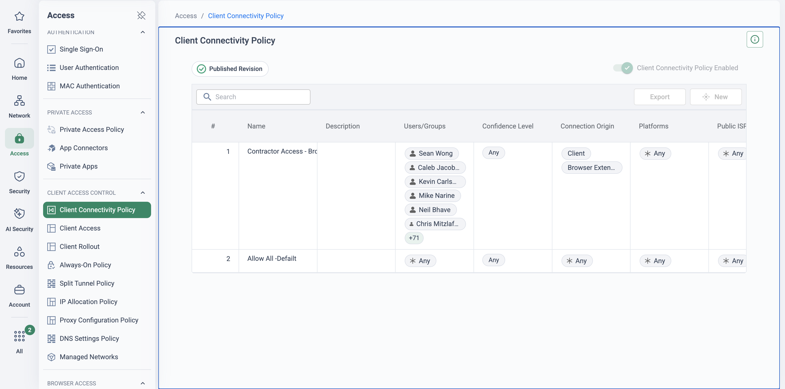

Why this migration is on the table
This page is built from public research (July 2026), not a delivery-verified runbook. Review the plan with Cato Professional Services — and verify every serial-specific lifecycle date against the customer's own Broadcom support-portal notices — before using it in a customer engagement.
Broadcom completed its US$10.7bn acquisition of Symantec's enterprise security business in November 2019; the cyber-security services arm was sold to Accenture within six months. Since then the portfolio has been rebranded (ProxySG became Edge SWG, WSS became Cloud SWG) and restructured: perpetual licences gave way to subscription — with licensing consultancies reporting steep renewal uplifts — and the dedicated proxy hardware line was collapsed, with Edge SWG and Content Analysis now running as VMs on the ISG hypervisor on SSP appliances (Broadcom's own material describes consolidating roughly thirty appliance models down to four).
The forcing functions are concrete and dated. These are Broadcom's published backstop dates — always pull the serial-specific dates from the customer's portal and letters:
Be precise about what is and is not end-of-life: Cloud SWG, CloudSOC and Symantec DLP remain active products — never claim an EOL you cannot cite. The pressure is structural: hardware EOL waves, the SGOS 7.3 sunset, Reporter's discontinuation, and a vendor whose stated model concentrates on its largest accounts. Anchor the conversation on the customer's own renewal quote and appliance EOL letters, and plan the migration waves backwards from the contract end-date.
The Reporter EOL also creates a hard discovery imperative: rule hit data and historic web-usage records live in Reporter databases and access logs that will not migrate anywhere. Export the hit data that drives CPL rationalisation — and archive any history needed for HR, compliance or legal cases — before Reporter is switched off.
"Which Symantec components are actually deployed — ProxySG/ASG models and SGOS versions, WSS, UPE, CloudSOC, DLP, SSL Visibility, Content Analysis, Reporter — when does each renew, and do you have Broadcom EOL letters in hand? And now that on-prem Reporter is end-of-life: who consumes its output today, and what history must you retain?"
What maps to what
Steering is the fundamental difference. Symantec web security is explicit — a PAC file, browser proxy setting, WCCP redirect or agent decides what reaches it, and only proxied web ports are inspected. Cato is transparent — the Cato Client steers users and the Socket/IPsec tunnel steers sites, and every port and protocol is inspected in a single pass at the PoP. That difference is also what makes co-existence clean (see below).
| Symantec component | Cato equivalent | Notes |
|---|---|---|
| ProxySG / ASG appliances (Edge SWG) | Cato SWG / Internet Firewall | Transparent Client/Socket steering — no PAC files, no explicit-proxy settings, no WCCP service groups; all ports and protocols inspected at the PoP. |
| CPL policy (VPM + Local/Central files) | Internet Firewall rules + App Control | Rationalised, not ported — no automated CPL converter exists. Much CPL volume is proxy plumbing (auth exemptions, pinned-cert bypasses, WCCP quirks) that simply ceases to exist in a transparent model. |
| WSS / Cloud SWG | Cato PoP-delivered SWG | Same cloud idea, different architecture: single-pass inspection at a PoP that also carries SD-WAN, ZTNA, CASB and DLP — one policy engine, no per-function agents or tenants. |
| WSS Agent / SEP Web Traffic Redirection | Cato Client | Remove at cutover — Broadcom's own KBs document WSS Agent conflicts with third-party VPN/tunnel clients. Never run it alongside the Cato Client. |
| CloudSOC CASB (+ SpanVA collectors) | Cato CASB (inline + API) | Securlets map to Cato API-CASB scope per app — validate coverage app by app in design. SpanVA log collectors are not needed: Cato sees the traffic at the PoP. |
| Symantec DLP (Network Prevent, Cloud Detection Service) | Cato DLP (Data Control + Content Profiles) | 350+ predefined data types, custom regex/keyword types, EDM, MIP sensitivity labels, OCR. Symantec EDM → Cato EDM; IDM fingerprinting and VML classifiers have no direct equivalent — redesign or retain Symantec DLP for those policies. |
| Symantec DLP Endpoint + Discover | No direct equivalent | USB/print/clipboard channels and data-at-rest scanning are out of SASE scope — retain the agent/Discover where mandated; Cato device posture can require the agent to be running. |
| SSL Visibility Appliance (SV series) | Cato TLS Inspection | Single-pass decryption inside the PoP — no dedicated decrypt appliance or tool-farm steering. Out-of-band tool feeds become event/log feeds to the SIEM instead. |
| Content Analysis / Malware Analysis | Cato Anti-Malware / NGAM + IPS | Inline scanning without an ICAP hop. Where a formal detonation-sandbox requirement exists, scope it explicitly against Cato's documented services — do not overclaim. |
| Management Center + Reporter | Cato Management Application (CMA) | Reporter is EOL regardless of the customer's decision — its replacement is already forced. CMA covers day-to-day analytics; long-term retention goes to the customer's SIEM. Export historic data first. |
| IWA realms / BCAAA / Auth Connector | Cato Client identity + IdP (SCIM/SSO) | Identity comes from the Client and IdP, not proxy challenges. BCAAA servers, Kerberos SPNs, virtual URLs and auth-exemption CPL all retire — inventory anything consuming forwarded user headers first. |
| Cloud SWG egress IPs (allowlisted by SaaS/partners) | Cato allocated egress IPs | 3 allocated IPs included per account (more purchasable); per-app egress rules pin traffic to fixed IPs — repoint allowlists wave by wave. |
| Email Security.cloud / SMG | No native equivalent | Scope out explicitly — pair with M365/Google native controls or a dedicated email security vendor. |
| ProxySG reverse proxy / MACH5 WAN-op | Not a Cato SWG use case | Workforce access to internal apps maps to Cato ZTNA; a true reverse-proxy/ADC or WAN-op estate needs its own successor plan. Say so early. |
Symantec DLP has real depth Cato's network DLP does not replicate: IDM document fingerprinting, VML trained classifiers, endpoint channels and Discover data-at-rest scanning. Do not contest it — reframe the scope. Cato enforces DLP inline on all traffic crossing the PoP, not just proxied web ports; the recommended design is a hybrid that keeps the Symantec DLP endpoint agent wherever endpoint-channel or data-at-rest mandates exist, with Cato device posture confirming the agent is running. Lead with this design — it is a scope statement, not a concession.
Five phases, each independently reversible
The sequence follows the Cato Professional Services methodology — discovery and design, parallel build and pilot, then phased cutover of users and sites, closing with optimise and decommission. Policy work follows the PS pattern: export → review & map → deploy → optimise. Broadcom's subscription terms make the contract end-date the real deadline — plan the waves backwards from it.
-
Discovery & design — export the CPL, capture hit data before Reporter dies
Pull the VPM, Local, Central and Forward policy files from each appliance — or the UPE reference device via Management Center, treating the UPE policy as the single CPL corpus. Use Reporter and access-log hit data, while they still exist, to find what actually fires; classify every layer as business intent (map to Cato), proxy plumbing (dies with the proxy), or dead (delete). Expect the mapped set to be a fraction of the CPL line count — that is the value story, not a loss.
Inventory the steering layer — every PAC and its GPO/PFMS distribution, hardcoded proxy settings (browsers, OS images, Java, npm/pip, curl, WPAD), WCCP service groups and the router configs behind them, proxy-forwarding chains, and the WSS Agent / SEP WTR population. The PAC/GPO estate is the rollback lever — document it before touching it. Map IWA-Direct/BCAAA authentication and every consumer of forwarded user headers; enumerate egress-IP-pinned SaaS and partner allowlists. Rationalise DLP by detection tech (described content → data types; EDM → EDM; IDM/VML → redesign or retain) and decide the endpoint-DLP hybrid now, not at cutover.
-
Pilot & parallel build — Sockets alongside, certificate ahead of need
Security → TLS Inspection
Build the CMA account to best practice with SIEM integration from day one — that is the reporting-continuity answer to the Reporter EOL. Deploy Sockets/IPsec at pilot and hub sites in parallel with the proxy path: Cato carries the traffic while the PAC still points browsers at ProxySG/WSS, so users notice nothing. Give the IT pilot cohort the Cato Client — after removing the WSS Agent. Roll the Cato CA certificate out fleet-wide ahead of need; enable TLS Inspection gradually (test group first, expand by category) with QUIC blocked; rebuild the pinned-app bypass list from the ProxySG/SSLV exemptions — verify, don't copy. Switch CASB discovery and DLP to monitor mode early and reconcile Cato DLP events against Symantec DLP incidents.
-
User cutover — PAC to Client, cohort by cohort
Access → Client Connectivity Policy
Per cohort: remove or neutralise the PAC and explicit-proxy settings via GPO, uninstall WSS Agent/SEP WTR, enable the Cato Client with Always-On. Run weekly waves with analysis and tuning between them. Cato's Proxy Configuration Policy can centrally serve a transitional PAC for stragglers that still need one. Repoint SaaS tenant restrictions and partner allowlists to Cato allocated egress IPs before the owning cohort flips.
-
Site cutover — unwind WCCP, retire inline appliances in sequence
Network → Sites
Cut each site's internet breakout to the Socket and Cato PoP; unwind the WCCP service groups on the routers and retire inline/bridged appliances once policy parity is confirmed on sampled rules. UPE estates: freeze Management Center policy edits per wave so the frozen Symantec policy and the live Cato policy cannot drift apart mid-migration.
-
Optimise & decommission — aligned to the contract end-date
Monitor → Events
Event-driven tuning across firewall, TLS, CASB and DLP; convert mapped DLP policies from monitor to block in stages, keeping the Symantec DLP endpoint agent live for its exclusive channels. Run CMA/SIEM reporting in parallel with any remaining Reporter/Hosted Reporting until stakeholders sign off — then export and archive the historic log data. Decommission the WSS/Cloud SWG tenant, CloudSOC (after API-CASB parity), ProxySG/ASG/ISG appliances, SSLV, Content Analysis, BCAAA servers, Management Center and any residual Reporter; reclaim GPO objects, PAC hosting and WCCP router config. Align licence non-renewal with the final wave, and re-evaluate the DLP hybrid: if endpoint and Discover mandates persist, keep a deliberately scoped Symantec DLP footprint with Cato enforcing everything in motion.
Two steering planes that don't collide
This pairing co-exists unusually cleanly. Symantec's steering is explicit — a PAC, browser setting, WCCP redirect or agent decides what reaches it; Cato's is transparent — the Client and Socket own the path. The two planes are independent, so both platforms run in parallel without conflict: in stage A Sockets carry site traffic underneath while the PAC still steers web traffic to ProxySG or WSS; in stage B each cohort's PAC is retired, the WSS Agent removed, and the Client/Socket steers that cohort to the PoP where Internet Firewall, SWG, TLS and DLP policy now apply.
One TLS inspection owner per cohort — never decrypt the same flow twice. While a cohort's web traffic still terminates at ProxySG, SSLV or WSS, scope Cato TLS Inspection away from that cohort, and flip inspection ownership at cutover. Rebuild the certificate-pinned app bypass list on the Cato side from the ProxySG/SSLV SSL-intercept exemptions — verify each entry rather than copying the lists blindly.
Independent steering planes
Explicit PAC/WCCP steering and transparent Client/Socket steering never fight over the same flow — both platforms run in parallel for as long as the waves need.
Rollback is a config event, not a project
Reinstate the PAC/GPO (or WCCP redirect) for the affected cohort, reinstall the WSS Agent where roamers need it, relax Always-On for that group — traffic returns to Symantec at the next policy refresh.
One tunnel agent per device
Broadcom's own KBs document WSS Agent conflicts with third-party tunnels. Uninstall WSS Agent/SEP WTR before enabling the Cato Client — and script the reverse for rollback.
Policy-frozen fallback
Keep the tenant and appliances licensed and policy-frozen until final sign-off, and freeze parallel edits on both platforms during waves so rollback stays a known-good state.
Where this migration bites — and what to say
"We have 20 years of CPL — you can't replicate it"
True as stated — and the wrong goal. No automated CPL-to-Cato converter exists, and none is claimed. CPL sprawls across VPM-generated and hand-written files in order-dependent layers, much of it managing the proxy itself. Rationalise, don't port: use hit data to find the live subset and position the reduction as risk removal — unauditable legacy logic is a liability.
Proxy-embedded auth (IWA / BCAAA / Kerberos)
Kerberos SPNs, virtual URLs, NTLM fallback and forwarded user headers all die with the proxy. Identity moves to the Cato Client + IdP (SCIM/SSO) — inventory every downstream consumer of proxy auth in phase 1; anything reading user headers needs a redesign, not a mapping.
Egress-IP-pinned SaaS & partners
Conditional access and partner allowlists keyed to Cloud SWG's published ranges — or to appliance egress IPs — break silently at cutover. Enumerate them in phase 1 and move each to Cato allocated egress IPs with per-app egress rules before the owning cohort flips.
Reporter data archiving
On-prem Reporter is EOL (announced 1 Mar 2025). Historic web-usage data for HR, compliance and legal cases lives in Reporter databases and access logs that will not migrate anywhere. Export and archive before decommissioning, land future logs in the SIEM from day one, and confirm Cato analytics retention against the customer's reporting obligations.
"Symantec DLP is deeper than Cato DLP"
Partly true — don't contest depth, reframe scope. Map the actually used policies: EDM → EDM; described content → Cato data types; IDM/VML → redesign or retain hybrid; endpoint channels and Discover → retain where mandated, with Cato posture requiring the agent. Test OCR limits against real policies in the pilot.
Custom categories & local databases
ProxySG local category databases and WSS custom categories won't transfer. Export the lists in discovery and rebuild as Cato custom categories and FQDN objects — mechanical but voluminous, so budget real time for it.
"Broadcom hasn't EOL'd the cloud service"
True — Cloud SWG, CloudSOC and DLP remain active. The pressure is structural: hardware EOL waves, the SGOS 7.3 sunset, Reporter's EOL, services sold to Accenture and subscription-only renewals. Anchor on the customer's own renewal quote and EOL letters — never claim an EOL you cannot cite.
Sandboxing & caching claims
Map Content Analysis/Malware Analysis honestly to Cato anti-malware, NGAM and IPS — scope any formal detonation-sandbox requirement explicitly rather than overclaiming. And before treating the SGOS cache as a loss, validate actual byte-hit rates: TLS-everywhere and CDN delivery have eroded forward-proxy cache value.
Skyhigh Security was spun out of McAfee Enterprise by Symphony Technology Group in March 2022, and the estate you meet is the same shape: on-prem Secure Web Gateway appliances steered by PAC or WCCP, a cloud SWG, Skyhigh CASB and DLP — under an owner that has been through carve-outs and rebrands. The Cato displacement play is identical: transparent Client/Socket steering replaces PAC/WCCP, PoP SWG/TLSi replaces the proxies, Cato CASB/DLP replaces the bolt-ons — and the same rationalise-don't-port rule applies to MWG rulesets as to CPL. Re-use this page's phases; only the export tooling and product names change.
How to prove it in the customer's tenant
A Symantec estate is too old and too wide to PoV whole — so pilot the thing this page says makes the migration safe: the two steering planes running side by side. One pilot cohort comes off its PAC and steers transparently through the Cato Client; every other cohort stays exactly where it is, PAC-steered to the policy-frozen ProxySG/WSS estate. On that cohort's real traffic the pilot proves a rationalised web-policy slice at parity — the reset the policy page prescribes, not a port of twenty years of CPL — plus a CloudSOC-to-Cato CASB comparison and staged TLS inspection with no SSL Visibility appliance in the path. Run it under the discipline of the PoV framework: agree the success criteria below before anything is configured, and book the decision meeting the same day.
Success criteria
Every row's artefact goes into a dated evidence pack, exported as it lands — the wrap-up reads the pack, not memories.
| Success criterion | Evidence artefact | Where it lives |
|---|---|---|
| Every pilot user steers transparently — PAC gone, WSS Agent removed, Cato Client connected, and each one identified by name at the PoP | Connected cohort list with device, Client version and PoP | Access → Users · Monitor → Experience Monitoring |
| Web-policy parity on the rationalised slice — the agreed test list of categories, coach pages and exceptions returns the intended verdicts from the reset rulebase, without any CPL being ported | Cato policy-hit events next to the matching ProxySG/WSS access-log lines, verdict by verdict | Monitor → Events + exported proxy access logs |
| CASB comparison — Cato app discovery on the pilot's SaaS traffic matches or exceeds the CloudSOC Audit picture for the same users, with no SpanVA collector, and one recreated activity policy returns the CloudSOC verdict | App inventory export with risk scores plus App Control events attributed to user, app and activity | Monitor → Cloud Apps Dashboard · Monitor → Events |
| TLS inspection staged without the SSL Visibility appliance — certificate deployed, cohort-scoped Inspect rule live, pinned-app bypasses holding, no user-visible breakage | TLSi policy revision plus a week of TLS events with zero unresolved certificate incidents | Security → TLS Inspection · Monitor → Events |
| Co-existence intact and no degradation — PAC cohorts work through Symantec untouched all pilot, and the pilot cohort's experience scores are no worse than the proxy-era baseline | Experience Monitoring baseline week vs pilot week; zero non-cohort incidents in the helpdesk queue | Monitor → Experience Monitoring |
- Success criteria signed off and the decision meeting booked, per the PoV framework.
- Trial licences confirmed for every capability under test — CASB and TLS inspection are both in scope here.
- IdP integration connected, with a dedicated pilot group provisioned over SCIM and visibly syncing before any rule references it.
- TLS inspection staged first — the Cato CA certificate rolled to pilot devices ahead of need, bypasses in, then inspection (see TLS Inspection: Staged Rollout Playbook).
- Scope is one client-based cohort: 10–25 users across two or three archetypes (an office group behind a socket-connected branch plus some roamers currently on the WSS Agent). Site cutovers, WCCP unwinding and DLP conversion belong to the migration programme above, not this pilot.
- The rest of the estate stays PAC-steered to ProxySG/WSS with policy edits frozen for the pilot's duration — the frozen state is both the parity reference and the rollback target.
- Reporter hit data and access logs for the pilot cohort exported in week one — on-prem Reporter is EOL (announced 1 Mar 2025) and this evidence base is a wasting asset whatever the pilot decides.
Configuration walkthrough
-
Capture the baseline while both planes still exist
Access → Users Monitor → Experience Monitoring
Provision the pilot IdP group and confirm SCIM has synced it. Export the cohort's ProxySG/WSS access-log lines and Reporter category reports — the parity reference — and run a baseline week of Experience Monitoring (Remote Users tab: per-user score, connected PoP, average TTFB) while the cohort is still proxy-steered. Inventory the cohort's steering surface — PAC/GPO objects, hardcoded proxy settings in browsers, Java, npm/pip and OS images, and which devices run the WSS Agent or SEP WTR. That inventory is the rollback lever — write it down before touching it.
-
Build the pilot's web-policy slice — a reset, not a port
Security → Internet Firewall
Start from Cato's recommended block baseline, then add only the rules the cohort's hit data proves it needs: the live category blocks, coach pages as Prompt, and the documented exceptions — every rule scoped to the pilot group as source, every rule with Track = Event, because events are the evidence. The Internet Firewall ends in an implicit any-any allow, so anything the slice doesn't mention passes untouched. Arm Block only for the agreed test list; everything else watches in monitor until its events prove it. No CPL crosses — construct-by-construct reasoning lives on Symantec Policy Migration, and the pilot exists to prove the reset is safe.
-
Stage TLS inspection for the cohort only — the SSLV replacement
Security → TLS Inspection
Push the Cato root certificate to pilot devices through the same GPO/MDM channel that manages the fleet — the KB is blunt that you must install the Cato certificate as a root certificate on end-user devices, and that certificate-pinned applications must be bypass rules (Android, Linux and unidentified operating systems are bypassed automatically). Then add an Inspect rule scoped to the pilot group, with QUIC blocked so browsers fall back to inspectable TLS. Rebuild the bypass list from the ProxySG SSL-intercept and SSLV exemption lists entry by entry — verify each against current app behaviour, never copy the lists blind. This step is the whole SSL Visibility story: decryption becomes PoP policy, and the appliance gets no successor.
-
Arm the CloudSOC comparison — discovery first, one policy at parity
Monitor → Cloud Apps Dashboard Security → CASB
Shadow-IT discovery needs no build: the application dashboards inventory the pilot's SaaS traffic — sanctioned and unsanctioned apps, risk scores, top users — at the PoP, with no SpanVA collector deployed. Alongside it, pick one or two CloudSOC policies the cohort actually trips (a granular activity control, say uploads to unsanctioned storage, and a corporate-tenant restriction) and recreate them as Application Control rules in monitor, following the KB's own advice to run new rules with events first and review before enforcing. The comparison artefact is CloudSOC's Audit view next to Cato's — same users, same fortnight.
-
Sweep the egress-pinned SaaS before the swap
Network → Network Rules
Any pilot-relevant SaaS tenant restriction or partner allowlist keyed to Cloud SWG's published egress ranges — or to appliance egress IPs — locks the cohort out the moment its traffic egresses from a Cato PoP. Sweep them now, and where a fixed source IP is required, bind a Cato allocated IP to a network rule's NAT settings so the cohort presents a stable address. Do this before the steering swap, not after the first lockout ticket.
-
Swap the cohort's steering plane — PAC off, Client on
Access → Client Connectivity Policy
One change window per cohort, three moves in order: neutralise the PAC and explicit-proxy settings via GPO, uninstall the WSS Agent/SEP WTR — never run it alongside the Cato Client — then enable the GPO/MDM-deployed Cato Client with an Always-On rule scoped to the pilot group, so the cohort cannot quietly drift back to the proxy path. Every other cohort's PAC, GPO and agent state is untouched — that is the dual-plane co-existence this page's diagram describes, running in miniature.
-
Run the parity fortnight and build the evidence pack
Monitor → Events
Walk the agreed test list with a cohort user: blocked categories, a coach page returned as Prompt, the recreated CASB activity, a pinned app passing through its bypass. Filter Events to the pilot rules, confirm each verdict is attributed to the named user and rule, and export the filtered view as a dated CSV per criterion (one export carries up to 250,000 events). Pair each Cato event with its matching proxy access-log line, put the app-inventory export next to CloudSOC Audit, and close the pack with the pilot week's Experience Monitoring scores against the baseline.
What good output looks like



Troubleshooting the pilot
Proxy remnants after the swap
A browser, Java runtime, npm/pip config or WPAD lookup still pointing at the proxy sends traffic to a policy-frozen box — or silently around Cato. The step-1 steering inventory is the checklist: clear PAC and proxy-enforcement settings in the same change as the agent swap, then verify per-application, not just per-browser.
WSS Agent still present
Broadcom's own KBs document WSS Agent conflicts with third-party tunnel clients. If a swapped device still shows the agent connected, the swap didn't complete — finish the removal before reading any parity events, and script the uninstall so it can't be half-done.
Pinned-app breakage under TLSi
Apps that ProxySG or the SSLV quietly exempted start failing the moment Cato inspects them. Certificate-pinned applications must be bypass rules — rebuild the list from observed TLSi events; the old exemption lists are a clue, not a config.
Cohort rules never fire
SCIM sync lag — or a user landing unidentified at the PoP — means group-scoped rules silently never match, which an IWA estate used to proxy challenges will not expect. Verify membership in Access → Users and prove one event attributes to a named pilot user before the parity fortnight starts.
SaaS egress-IP lockout
Conditional access keyed to Cloud SWG's published ranges locks pilot users out the moment egress moves to the PoP. If step 5 missed a tenant, the symptom is sudden MFA loops or flat denials for cohort users only — repoint the allowlist to the Cato allocated IP and retest.
Category verdicts disagree
Symantec's category taxonomy and Cato's do not line up one-to-one, so some test-list URLs land in different categories. Judge the agreed list verdict by verdict against intent — a mismatch is mapping feedback for the slice, not a parity failure, and monitor-mode events surface it before any user does.
Gotchas & the exit plan
- Parity means intent, not identical counts. Two category taxonomies, two event models — judge the agreed test list verdict by verdict, never by comparing event volumes.
- DLP stays out of the pilot. Symantec DLP remains authoritative throughout — the hybrid design and the monitor-mode reconciliation against the Enforce queue are a migration workstream, not a fortnight's evidence. The CASB comparison here is discovery and activity control, not DLP parity.
- CloudSOC Securlet coverage is app-by-app. The pilot compares inline discovery and activity verdicts; API-CASB parity for every sanctioned app is validated in the programme's design phase, per the mapping table above.
- Evidence windows. An Events query spans at most 31 days — export weekly as the framework prescribes, rather than reconstructing at wrap-up.
- Reporter is a wasting asset. The hit data that justified the rationalised slice — and any history HR, compliance or legal may need — must be exported whatever the pilot decides. Week one, not decommissioning day.
- Licence boundaries. The CASB criterion needs the CASB module and TLS inspection live for the cohort; without TLSi, activity-level verdicts cannot reach parity.
If the pilot passes, nothing is thrown away: the rationalised slice becomes wave one's production policy, the pilot group simply widens cohort by cohort, and the programme proceeds up this page's five phases. If it must unwind, rollback is the config event this page promises: reinstate the PAC/GPO objects from the step-1 inventory, reinstall the WSS Agent where roamers need it, relax the Always-On rule for the group — the cohort returns to the policy-frozen Symantec estate at the next policy refresh, which never stopped being licensed, frozen and authoritative for everyone else. Set the pilot's Internet Firewall, TLSi and CASB rules back to monitor and disable rather than delete — the slice remains an asset for the real migration — and leave the root certificate in place or remove it with the same GPO/MDM tooling; it is inert either way. The estate lands exactly where it started: one steering plane, PAC-steered, Symantec-enforced — and a decision de-risked.
Where this sits in the Cato SASE platform
- Cohort A keeps its PAC and WSS Agent, steering explicitly to the policy-frozen ProxySG/WSS estate.
- Cohort B steers transparently via the Cato Client and site Sockets to the PoP; WCCP is retired.
- One TLS inspection owner per cohort; Symantec DLP Endpoint and Discover stay for USB, print and data at rest.
Resources
Cato documentation
- Managing the Internet Firewall Policy (KB)
- Best practices for TLS Inspection (KB)
- Proxy Configuration Policy — centralised PAC (KB)
- Unified CASB solution (KB)
- What is the Cato DLP Service (KB)
- Exact Data Matching (EDM) for DLP (KB)
- Allocated egress IP addresses (KB)
- Cato Professional Services (runs the methodology)
Symantec sources (techdocs.broadcom.com)
- Writing policy using CPL — the corpus you're rationalising
- Cloud SWG connectivity matrix — the steering estate you're retiring
- Universal Policy Enforcement (UPE) — export from the reference device
- Symantec DLP 16.1 Help Center — for the hybrid design
- SSL Visibility appliance guides — the TLSi you're replacing
Serial-specific hardware EOL dates and the Reporter EOL notice live on the Broadcom support portal — always verify against the customer's own letters.